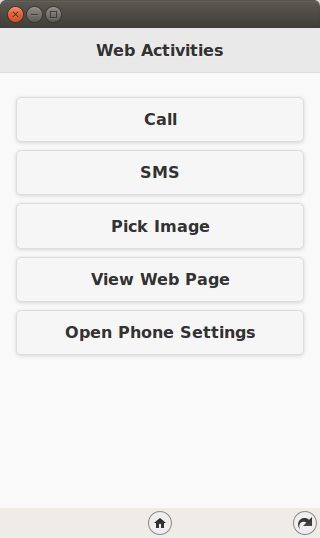
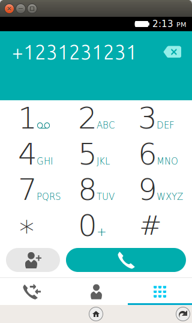
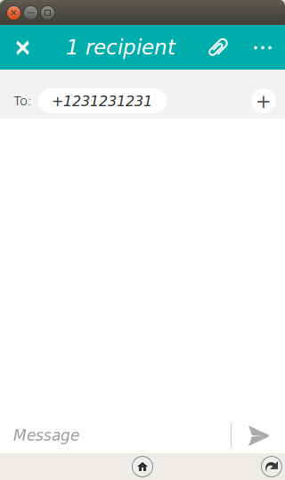
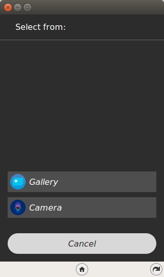
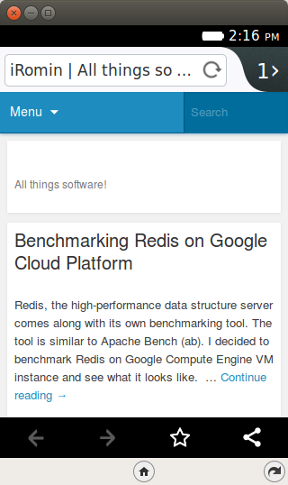
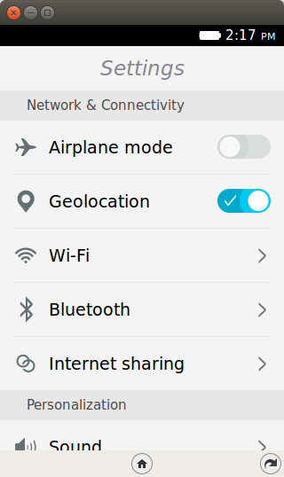
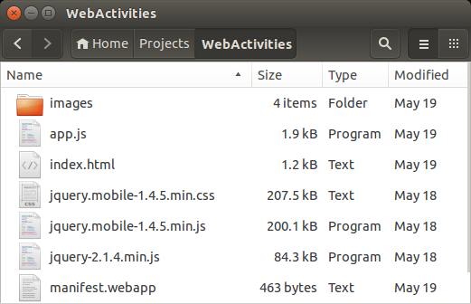

Welcome to Episode 8 of the Firefox OS App Development Tutorial. In the previous episode, we looked at how you could add persistence to your application via the IndexedDB API. In this episode, we shall use Web Activities, which as the official documentation states is a “way for applications to delegate an activity to another (usually user-chosen) application”.
Think of a simple example like making a phone call. This is standard functionality that is available on the phone as part of the dialer application. Now, let’s say that you have a FirefoxOS Mobile App that at some point needs to make a phone call. There is no need for you to understand the Telephony API and try out some hair-raising stunts like that.
You know at the back of your mind that there is already a Dialer application available. Similarly, if you need to send a SMS or an Email or even look up Contacts, these applications are already present. So why not just launch those in-built applications via a standard mechanism and offload the heavy-duty part of the functionality to an application that already knows how to do it well. That is the fundamental premise of a Web Activity.
You want to make a phone call in your application, just launch the Phone App. You want to send a SMS in your application, just launch the SMS App. As simple as that.
Let us check out the application in action first to understand what we are trying to do here.
What we shall write is a mobile application that will allow us to invoke some standard Web Activities like making a phone call, sending SMS, opening a web page and so on. The intent in this episode is just to show you that these web activities exist and that you should try to employ as many of them in your application.
Note that the example screenshots are from the Firefox OS Simulator running locally. Keep in mind that not all Web Activities can be run from the Simulator. Try them in the Simulator but these activities are best executed on the actual device.
I am not lucky enough to have a device, so certain Web Activities do not work for me and I will tell you those points as we move along. So you can use your Firefox OS Simulator to run the example here but they will not function well though it will clearly demonstrate what is possible.
All right then, the first screen of the mobile app is shown below:
The screen shows a simple page with several buttons. Each of these buttons when clicked will launch a specific Web Activity. It should be clear from the button labels about what they will be doing.
When you click on the Call button, it will launch the Phone app on Firefox OS. Notice that we can provide the phone number to dial, so that will save the hassle for the user to enter the number.
When you click the SMS button, it will launch the Messaging App on the device as shown below. Very useful activity where you can populate the number, message, etc.
The button Pick Image is interesting. It shows the real power of Web Activities where you will be presented with one or more options that can be chosen to complete your Activity. So when we click on Pick Image, the Firefox OS understands the activity pick and shows you automatically the 2 applications that could fulfill your activity request. You can then select from them.
Neither of these activities work on the simulator, but rest assured they do work on a real device.
When you click on View Web Page, we launch the Web Activity that will display a web page. Shown below is the display of my web site (Sorry for the marketing plug :-)).
Finally, when you click the Open Phone Settings button, it will open up the standard Settings page on your device. Think of an application which requires Internet access and if you determine that the connection is not present, you could ask the user if he/she would like to navigate to the Settings page and turn on the Wi-Fi for example. If yes, you could use this Web Activity to launch the Settings page as shown below:
Let’s get going with the code.
I suggest that you begin with a full download of the project source code. Since the project depends on libraries like jQuery and jQuery Mobile, it will save you the hassle of downloading the dependent libraries.
Go ahead & download the code from: https://github.com/anicholakos/WebActivities
Extract all the code in some directory. You should see a directory structure inside of WebActivities, that looks something like this:
Before we discuss what are Firefox OS Activities, it is good to reiterate what was mentioned in the beginning of this episode.
Most of our Smartphones come with a variety of Applications. Some of these applications are available when you purchase the phone itself such as dialer, messaging, email, camera, and contacts. And over time you install a variety of other applications too that suit your needs.
If you have written or used a variety of applications, you would have noticed that at times some core functionality or actions taken by these application are the same.
Some of the common actions in an application could include making a call, sending a SMS, sending an email, launching a camera to take a picture, viewing an external web application and so on.
So typically, when you want to do these common actions in your application, then as a developer you have 2 options in front of you:
- Write from scratch.
- Use existing applications that can do the work.
The first option (which all developers love at their back of their mind) is to write that functionality from scratch. While this is laudable, it is not practical. It is not practical for a number of important reasons:
- It will take you time to understand and write that functionality. For e.g. understanding the Telephony API is not a joke. At times the functionality may not be exposed at all.
- Time to market is short and would you rather focus your time to build a great application or focus on plumbing efforts that are actually already present and are done in a standard and better fashion by other applications.
- Users also play an important role. They are using your application day in and day out. They are used to standard UX present in the Dialer App, Email App, SMS App and so on. So when you present your own UX to do the above functions, chances are that they will be lost and might even end up not using your application. A lot of time and effort has gone into creating these standard applications, so why not use them in your application.
The second option and which is the focus of this episode is to use existing Applications that can do that work.
Hopefully you are convinced with the arguments that I have made now :-) and want to get going with Web Activities and hopefully the official definition that I have relisting below makes sense:
Web Activities is a mechanism for applications to delegate an activity to another (usually user-chosen) application.
Firefox OS comes with a huge list of Web Activities that you can use today. And while we are going to see just a few of them here, you can check out the list and try them. For a fraction of the effort, you will augment your application with features that your users will appreciate.
There are several Web Activities available as per the list here. You have activities for:
So whenever you want to launch a Web Activity, you will need to check out the documentation because you need to provide at a high level the following:
Take the example of making a phone call. The name of the activity will be dial and the data filters that we can provide are the type i.e. (webtelephony/number) and the number that we wish to dial.
So for each of the activity, you should lookup the docs and determine what is the name and the data filters that you can pass.
Once you have that information, the pattern to launch the activity is the same. You will need to create a new MozActivity object passing the name and the data. The activity will be launched automatically on creation. The control is then transferred out of your application to the activity. Once the activity completes, the control can switch back to your application and you can retrieve any information via the two callback function onsuccess and onerror functions that will have additional information.
An example from the standard documentation is shown here:
var activity = new MozActivity({
// Ask for the "pick" activity
name: "pick",
// Provide the data required by the filters of the activity
data: {
type: "image/jpeg"
}
});
activity.onsuccess = function() {
var picture = this.result;
console.log("A picture has been retrieved");
};
activity.onerror = function() {
console.log(this.error);
};
You will see that we launched the pick activity. And if the Activity completed succesfully i.e. the user selected an image, then the onsuccess method will get called and you can retrieve the object that was selected via the this.result value. Similarly, if there was some problem, the onerror method will be invoked. Simple isn’t it?
Keep in mind that Web Activities are also known an Intents. These concepts are present in other Smartphone OS like Android, Windows Phone and iOS. They may refer to them with different names, but the concept is the same. So if you have programmed in the other environments, this should be simple to understand.
OK. Lets get going with understanding the code and how we can use Web Activities in our application.
The first thing we should discuss is the manifest file. This should be familiar now and it has the standard attributes like name, version, etc. There is nothing special happening here.
1 2 3 4 5 6 7 8 9 10 11 12 13 14 15 16 | {
"version":"2.0",
"name": "Web Activities",
"description": "This app demonstrates how to use Web Activities (Intents) in a Firefox OS App.",
"launch_path": "/index.html",
"fullscreen": "false",
"icons": {
"128": "/images/web_activities_128.png",
"512": "/images/web_activities_512.png"
},
"developer": {
"name": "Romin Irani",
"url": "http://www.rominirani.com"
},
"default_locale": "en"
}
|
Next up is the index.html page, and it is a simple jQuery Mobile page.
1 2 3 4 5 6 7 8 9 10 11 12 13 14 15 16 17 18 19 20 21 22 23 24 25 26 27 28 29 30 31 32 33 34 35 36 37 38 39 40 41 42 43 44 45 46 47 | <!DOCTYPE html>
<html>
<head>
<meta charset="utf-8">
<meta name="viewport" content="width=device-width, initial-scale=1">
<title>Web Activities</title>
<link rel="stylesheet" href="jquery.mobile-1.4.5.min.css">
<script src="jquery-2.1.4.min.js"></script>
<script src="jquery.mobile-1.4.5.min.js"></script>
<script src="app.js"></script>
</head>
<body>
<!-- Start of first page: #home -->
<div data-role="page" id="home">
<div data-role="header" data-position="fixed" id="header">
<h3>Web Activities</h3>
</div><!-- /header -->
<div data-role="content">
<a href="#" id="btnCall" data-role="button">Call</a>
<a href="#" id="btnSMS" data-role="button">SMS</a>
<a href="#" id="btnPickImage" data-role="button">Pick Image</a>
<a href="#" id="btnViewWebPage" data-role="button">View Web Page</a>
<a href="#" id="btnOpenSettings" data-role="button">Open Phone Settings</a>
</div><!-- /content -->
</div><!-- /page home -->
<!-- Second page to show image -->
<div data-role="page" id="showImage">
<div data-role="header" data-add-back-btn="true">
<h1>You Picked this...</h1>
</div>
<div id="pickImage" data-role="content">
</div>
</div><!-- second page -->
</body>
</html>
|
Let us discuss the index.html page in detail now:
1 2 3 4 5 6 7 8 9 10 11 12 13 14 15 16 17 18 19 20 21 22 23 24 25 26 27 28 29 30 31 32 33 34 35 36 37 38 39 40 41 42 43 44 45 46 47 48 49 50 51 52 53 54 55 56 57 58 59 60 61 62 63 64 65 | $(document).ready(function() {
//Shown below are just a few Intents (Web Activities)
//Check out https://developer.mozilla.org/en-US/docs/WebAPI/Web_Activities#Firefox_OS_activities
$("#btnCall").click(function() {
var call = new MozActivity({
name: "dial",
data: {
number: "+1231231231"
}
});
});
$("#btnSMS").click(function() {
var newSMS = new MozActivity({
name: "new",
data: {
type: "websms/sms",
number: "+1231231231"
}
});
});
$("#btnPickImage").click(function() {
var pickImageActivity = new MozActivity({
name: "pick",
data: {
type: ["image/png", "image/jpg", "image/jpeg"]
}
});
pickImageActivity.onsuccess = function() {
//Create the element via jQuery
var imageElement = $('<img id="image1" height="400" width="300">');
imageElement.attr('src', window.URL.createObjectURL(this.result.blob));
$("#pickImage").html(imageElement);
//Switch to the #pageid = showImage
$.mobile.changePage ($("#showImage"));
};
pickImageActivity.onerror = function() {
alert("Cannot pick the image");
console.log(this.result);
};
});
//View a Web Page
$("#btnViewWebPage").click(function() {
var openURL = new MozActivity({
name: "view",
data: {
type: "url",
url: "http://www.rominirani.com"
}
});
});
//Settings
$("#btnOpenSettings").click(function() {
var openSettings = new MozActivity({
name: "configure",
data: {
target: "device"
}
});
});
});
|
Let us discuss the source code in detail now. The code should be straightforward because invoking the Web Activity is always the same pattern. You need to give a name, some data filters and optional trap the onsuccess and onerror callback methods.
Another interesting aspect of Web Activities is that, while this episode covers how to invoke web activities, you can also make your application available as candidate to perform a specific activity. For e.g. assume that you write a great Image Processing application which allows you to manipulate/tweak images before sharing them. You can make your application as a candidate for the Pick Activity too and then when any other application tries to launch the Pick Activity, your application will also come up in the list that is shown to the user.
The important thing here is that your application will need to be installed on the device for it to come up. Firefox OS will do the rest of making sure your application will come up in the list. All you have to do is define in the manifest.
Check out https://developer.mozilla.org/en-US/docs/WebAPI/Web_Activities#Registering_an_App_as_an_activity_handler for more information.
Web Activities are a key building block of any mobile application, whether it is a Firefox OS app or any other mobile OS. Familiarize yourself with the various Web Activities that are already present in the Firefox OS. I am pretty sure that you will identify a use for them depending on the functionality of your application. And remember, it is better to reuse existing functionality, then trying to create your own. Your users will also be happy with your application for allowing them to access functionality and UX that they are familiar with.
{kind=link}
{kind=link}
{kind=link}
{kind=link}
{kind=link}
{kind=link}
{kind=link}